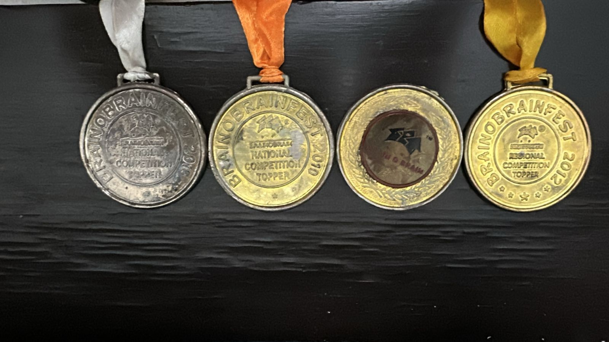
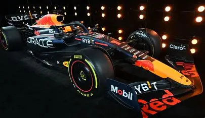

They're not staring… they're networking.
Hi, I'm
MSc · King's College London · Ex-FinIQ · AI Curious
FinTech consultant turned AI-curious researcher. I spent two years at FinIQ delivering structured products for global banks, then moved to London to study management and technology at King's. Right now I'm writing a dissertation on how AI is reshaping authority inside organisations, and honestly, I can't wait to see where it all goes.
Skipping ahead to the good part…
Auto-scrolling in 10s

Started with abacus… upgraded to AI curiosity.
Blame Steve Jobs… and a lot of curiosity.
Commerce made sense. Finance made more.
From testing systems to testing what I really want.
When curiosity gets serious, you move cities.
Where tech meets management… and chaos meets structure.
AI is changing roles. I'm studying the humans in between.
Curiosity → automation → this might actually be serious.

Organised… but not boring.
Loading projects…
Loading certificates…